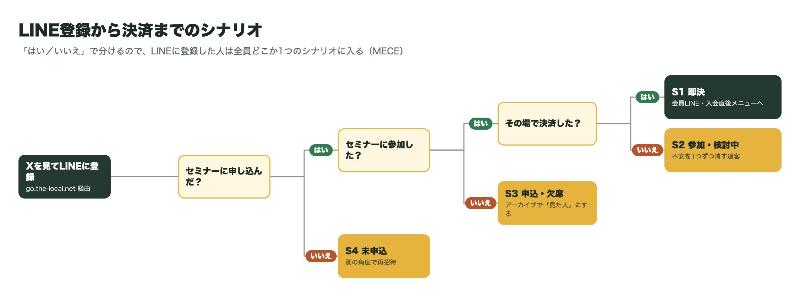
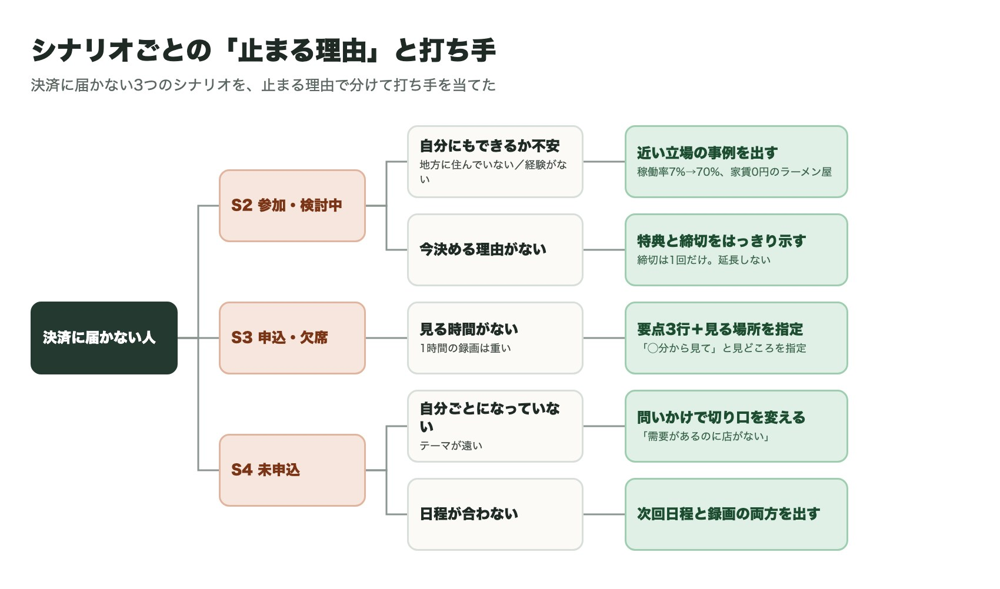

01いまの導線（調べて分かったこと）
石川さんのXの投稿106件（9/7〜10/19）、Circleのイベント告知とリマインド、THE LOCAL SESSION 01のアーカイブを読みました。
入口Xの投稿からLINE登録「LINE追加してセミナーを絶対に聞いてほしい」と投稿にリンク。リンク先は友だち追加ページ。
セミナーで渡すものビジネスモデル10個「月100万の粗利を地方で稼ぐなら、このビジネスをやる」という10個を参加者にプレゼント。
伸びている投稿の型具体的な数字と、意外な行動「タワマン→限界集落で廃墟ビルを5万円で買った」13.9万表示、「1日4時間も働いてなかった」8.9万表示。
セミナーの中身「次の10年は地方に張る」需要があるのに供給がない場所。稼働率7%→70%のホテル、家賃0円で行列のラーメン屋。
いまのリマインド告知文の再投稿が中心Circle内は「本日20時〜」の短文と長い告知の再掲。「なぜ今日来るべきか」の一言がない。
分からなかったこと決済前のLINEの中身友だち追加しないと見られないため未確認。価格・締切・決済ページは文章案では空欄にした。
02シナリオ


03理想の流れ
登録した日をD、セミナー当日をSとした配信スケジュールです。右の「文章案」から、その場面の5案に飛べます。
締切は本当に締めてください。延長したり毎回「最終」と書いたりすると、景品表示法の有利誤認にあたるおそれがあり、次から信じてもらえなくなります。
04文章案（7場面 × 各5案）
【 】の部分は、日時やURLに差し替えてください。どの案も、1通目の吹き出しにそのまま貼れる長さにしています。「質問の時間を取る」「録画を見た人にも特典を渡す」などは提案なので、運営の方針と違えば消してください。